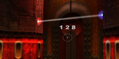

neogeographica.com is a home for possibly-interesting-or-useful things I've made or collected that are related to Quake, Quake 3, and Quake Live. If those games don't float your boat then you won't find much of interest. Otherwise please use the tabs above to reach the main sections of the site!
Some old Quake-related content seems to have managed to completely drop off of the internet. If you happen to be able to get your hands on any of the following things, let me know (contact info at bottom of page):
| The Ruins of Oehm (oehm.pk3) : An early custom Q3 map that was popular on some ProMode servers. It vanished when all those Quake-era game-files websites died off. | |
 | ClanRing T3 Demos : Any demo from a game marked as "no demo" in this readme file would be a good find. |
| Ramshackle : A formative review site for Quake DM maps. I'm looking for a complete site archive — existing archives are missing lots of pages and/or pictures. |
 | Jul 11 2020 : Gathered up and documented the files and scripts for the Linux Desktop Integration I'm using to do various Quake-playing things quickly. If you give this a try, let me know how it turns out! |
 | Mar 13 2020 : Update for the Quake Singleplayer Starter Pack to bring on board more highly-rated classic stuff (up thru end of 2018 releases now). |
 | Mar 12 2020 : Mention the inclusion of a jlctf3 variant in the Uber Arena mod |
| Jul 23 2019 : Small update to the Quake Singleplayer Starter Pack to fix some broken links for installable soundtracks. |
 | Jul 21 2019 : Dusting off the gameserver scripts for a couple of things: 1) making them work on modern Debian releases, and 2) improving the Webmin plugin to show server status and port number. |
| Jul 17 2018 : Update for the Quake Singleplayer Starter Pack so that it runs in windowed mode when installing stuff. |
|  | Jul 01 2018 : I had the urge to put together a little Surveyor mod for Quake 3, which lets you measure map spaces in-game. |
| Apr 23 & May 09 2018 : Updates for the Quake Singleplayer Starter Pack: more installable things, the ability to launch and uninstall mods from the installer, the new version of the Mark V engine, Simple Quake Launcher 2, and various fixes. |
 | Apr 04 2018 : Uploaded a build of Ghosts Made Flesh, a variant on a neat "Quake Tourism" mod. |

 ) except where indicated otherwise
) except where indicated otherwise